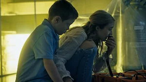
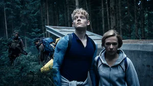
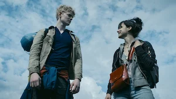

Seis años después de que un virus transmitido por la lluvia asola Escandinavia, dos hermanos se unen a un grupo de sobrevivientes que buscan seguridad y respuestas.
Episodios y trailers
-

1. «No salgan»
Un virus mortal que se propaga con la lluvia obliga a los hermanos Simone y Rasmus a buscar refugio en un búnker subterráneo, separándose de su padre científico.
-

2. «Quédense juntos»
Después de seis años de aislamiento, Simone y Rasmus se topan con otros sobrevivientes. Para seguir viva, Simone deberá comprobar que es útil para el grupo.
-

3. «Eviten la ciudad»
Simone y los demás se dirigen a la sede central de Apollon en Suecia, pero el camino a través de Copenhague está lleno de peligros.